[原创] 遭遇“卖猪仔”
5/26/2005 2:10:39 AM
遭遇“卖猪仔”
想了几天了，还是决定把下面的东西写出来，毕竟这是一个城市，一个社会的一个侧面，我不是执法人员，也不是记者，不是社会学家，只是一个普通的大学生。目睹这样的事实，也不好评论是什么部门的责任，仅仅提供一个事实，让大家去思考。
本人身处广州增城（华师增城学院），17日中午，一个在珠海北京师范大学的朋友找我有急事。于是我搭车到暨南大学转乘由歧关车路公司提供的客车前往北师珠海。车子穿过高速很快就到达目的地，旅程很愉快，没有北师珠海的的学生证收全票55元，比起满意的服务来说并不贵。注意咯这里不是有意识在做歧关车的广告而是要和下面非法营运的方式埋下一个对比的铺垫。
办完事情已经下午5:40了，我买的回程车票是下午5:50的。正当我在和朋友闲聊等车的时候歧关车的一个工作人员过来和我说，由于路上堵车，车子将推迟几分钟到达。我心里有一种不祥的预感：算上回广州的车程差不多两个小时，下车后还要赶到流花车站，可能已经不够时间赶上增城方向的车了。
车子六点来了，迟到了十分钟，就是这十分钟造就了下面的事件。
回到广州时是晚上8:50分。我立即跳上一辆计程车，我问司机，从这里（暨南大学）到流花车站什么交通工具快？Taxi还是Subway？司机说Subway可能需要二十分钟，但是Taxi可以在十五分钟以内到达。我相信司机于是叫司机开足马力，但是碰巧下雨，车子开不快。车子跑上环市路，下了高速就是流花车站，我看看时间刚好好过去十五分钟，车资用了31元。不过我心想没有关系，最重要的是可以赶上车。于是我立即跑向售票亭，工作人员告知最后一班车是9:00，我一看现在的时间已经是9:07分。
恶梦开始了，9:08。
这个时候插播一个有趣的插曲：
正巧一个女孩走过来同样问工作人员增城方向的车，于是我上前尝试和那个女孩沟通，如果对方也是想回增城或者同样方向的话我们可以共同搭一辆taxi回去，记忆中以前是90块可以包车到达，两个人的话每人只需要45元。因为在广州找地方过夜很麻烦况且学校明天还有早课。但是我刚刚开口，还没有来得及说清楚，那个女孩就使劲摇头甩手，我尝试多说几句，没有想到她居然掉转头一个劲儿往外跑。我那么恐怖吗？我想那就算了，社会复杂，误会我也时正常的。于是自己走出车站尝试自己找一个Taxi回去。正巧刚才那个女孩也在和一个Taxi司机谈价钱。我本着为自己生一些钱也为那个女孩省一些钱的心态（毕竟是晚上两个人也比较安全）再次上前尝试共搭一辆车。就在我离那个女孩还有5米的时候，女孩突然回头看到我，同样的举动，马上掉头跑了。我连解释的机会都没有就被人当成“贼”了。无奈之下我只好找另外一些Taxi谈价钱，自己一个人包车回去。
时间也不早了，9:13。
找了很多，找到一个说是要80元，而且和我说马上开车，说不到学校门口不收钱。于是我上了那个车子。
然后的事情就将简单了，司机没有马上开车，把我关在车上继续到外面“拉客”。因为今天很累，我想司机也是想提高效益，找一个顺路的客人，于是也就没有在意，因为只是要等一会，也就算了。我拿出SX1智能手机一边听音乐一边和朋友发信息。就这样等了很久，我实在不耐烦了，这个时候我尝试找司机来谈谈，当我尝试打开从里面打开车门时我才发现我已经被锁在里面了，我仔细观察发现车子是被改造过的，车子的玻璃不能摇下来，原本没有中央锁的普通大众Taxi已经被改动，在司机速度表盘附近增加了一个小开关用于控制其余三个车门的锁。
于是我立即发信息告诉朋友这边的情况，以便在必要的时候可以帮我报警。而我在找一个机会逃出去。这个时候司机回来带来一个人，好像也是坐车的，但是后来因为价钱没有谈好也就拉倒了。突然间很感兴趣想知道这种计程车的运营模式，于是我一边用信息和一个朋友保持联系，另一方面打开手机的相机功能，尽可能记录下发生的一切。
就这样不断有人被拉回来谈价钱，然后不断有人走（因为价钱不理想），我就坐在后排座位上面，表现得很无奈。后来我被转到另外一台车子，从一辆车被“押解”到另外一辆车，在走过去的途中，我的肩膀被紧紧搂住，以致于我根本没有机会逃离，我尝试甩开那个手，但是那个来自湖南（之前在和司机沟通的时候得知）的司机长得十分高大我根本没有力气逃脱。
进入另外一辆车，我留意到这辆车是由“安通公司”提供编号是“237866A”（车牌号：粤AC3050）的计程车。这一辆车看来情况一样，还是在等客人，而且车子的锁业时经过改造的，不同的是在前面的副驾驶座上坐着另外一个女人，在和她交谈时得知她也是搭车的，但目的地并不是增城而是新塘。不久司机拉回来一个男的乘客，目的地也是新塘。过了一段时间又找来一对去新塘的夫妇。于是加上我一共五名乘客，一个司机，实司机也终于愿意开车了。前面的副驾驶座坐着一个女乘客，然后后面一对夫妇和一个中年男人和我挤在一块，我夹在中间觉得很挤，很压抑。但是车子总算上路了，原来以为我就这样可以平安回学校了，虽然坐得很不舒服但是心里面也稍稍放松。正要开车的时候我和司机确认了一下，我的目的地是增城，镇龙，华南大增城学院。司机一个劲儿说没有问题，反正是到目的地才付钱。
车子开动，我看一下，时间，9:57。
车子走国道，很快到达新塘，司机说把其他乘客送到目的地后才把我送回增城。先是坐我右边的中年男人下车，然后是那对夫妇下车（好像是新塘“太阳城”附近）。
这里还有一个小细节，就是当后面的乘客下车后剩下我和前面那个女人，司机不断找话题和那个女人攀谈，而且攀谈中发出淫荡的笑声，手也开始不规矩，让我我看得很不舒服。女人显然明白司机的不轨企图，在差不多到目的地的时候找了一个比较亮，人也比较多的地方提早下车了。女人给了钱重重的摔车门离去。
所有乘客下车后司机没有把我送回学校，而是找了一个街口停下。夜色中我看到街上两边的招牌一边写的是增城XXXX（商店名），而另一些写的是新塘XXXX（商店名），推测，这里应该是新塘和增城的交界，我无法得知那里的确切位置。再看看这个街口上人并不少，但都是在“找车”或者“拉客”。我想这个司机已经不是头一次来这里了，后来才发现不是那么简单。
此刻时间，10:45
司机停下车，关掉引擎，下车，又一次把各个车门锁上。打通电话和一个像是头目的人物交谈了一下，我听不懂湖南话，但是隐约听到是在讨论该怎样处置我这个“不顺路”的乘客。然后司机和那些正在拉客的人交谈，不久司机开了后面的车门坐到我身边，然后对我说，不知道你学校的具体位置，所以在找其他人送我过去。直到现在我终于知道自己遭遇“卖猪仔”了。我反问司机，上路前你不是说知道路吗？司机没说话，只是说反正我找人送你过去，到目的地你再给他钱就好！语气已经变得很凶，声音很大。我说，反正我不管，我只是给你钱你送我去目的地就好。司机离开后排座位，重重关上车门，再一次把我锁在车上。由于前排的车窗没有关，我可以听到司机在大声喊“我这里有一个客去增城，40块谁要！学生，没事的，保证安全！40块好价钱呀！大家快来！……”。然后有好几个司机过来，都说价钱太低，要50块才干。就这样谈了很久，终于有一个司机答应四十块把我送去。唉，遭遇这种叫卖我还是头一次，但是我很坦然，到这里也不害怕了，他们的目的只是钱，而我更想深入一点了解他们的运作，然后揭发出来，给别人一个借鉴。司机过来开门，示意我上了另外一个车子。这个车子是一辆TOYOTA的小面包车。上了这个车子后，我原来的“主人”和新的“买主”仍然在谈判，双方企图得到进一步的经济效益，最后我看到新的司机掏出四十块给原来那个司机，那个家伙拿到钱后马上驱车离开了。
换车的时候我看了一下时间，11:13。就在这28分钟，我被人用40块人民币“卖”了！
上了小面包后觉得没有什么不同，不同的只是现在我坐到车头的副驾驶座，司机也没有像他说的那样马上开车，而是照样不断拉客。新的司机是一个年轻人，交谈中他告诉我他刚二十，85年生，比我还小一岁，土生土长的增城人。另一个同样年轻的女子是他的妻子，负责收钱和“拉客”。那个女子在下车“拉客”的时候男的递了一包烟过来，问我要不要，我不抽烟所以拒绝。他随即点燃一根烟，一边吞云吐雾一边说“我初中念了70天的书然后就没有念下去，换了很多工作，最后考了车牌做了这一行。他说他们还是比较文明的，起码保证一定会吧接到的客人送到目的地，不像有一些人司机会把你丢在“前不着村，后不着店”的路边，一走了事……
这时候我的手机没有电了，自动关机前我最后一次看时间：11:24。
谈了好长一段时间，女子拉回来好几个客人，车子就发动起来，上路了。
终于开车了，感觉上这个小夫妻挡比较文明，虽然还是在拉客的时候和其他行家有一点冲突，谈不来的时候会有一些粗口，比起刚才那个外地司机，现在的感觉还是好一点。
司机把车开到增城市区,放下其他乘客,然后往我学校的方向驶去,度过了最后的30公里路，途中我实在很困，疲劳战胜了不安和警惕，我趴着睡了一会。
醒来不久就到学校门口，回到宿舍看时间已经是第二天的1:33。
经过这样议一轮折腾，我终于到步了，原来只有50公里左右的路程，计程车只需要一个小时；这次却跑了差不多200公里，用了4个多小时！而且一直在不安中度过。
不过，能平安到达我也值得庆幸了。类似的过程我想很多人都经历过，我想这不是一个法治的大都市应该具有的。不知道多少无知的、可怜的乘客被欺骗，遭遇危险，损失财物……
冲了两杯咖啡才把这篇文章写完，心里面感觉怪怪的，事情已经发生几天了，每一天看着图片，回想那个晚上的一些细节，很愤怒也很无奈，但不想把经过写出来。回想起那个在车站见到我显得很害怕的女生，我才恍然大悟，自己内心深处一直犹豫：如果把这个经过写出来的话将会有更多的人会像那个女生一样，至少如果在这之前我读过相关的文章，我也会像那个女生那样。但是保护自己又有什么错呢？但愿那晚那个女生没有上错这种贼车，平平安安。
仿佛司机狡猾制造的恐怖在这个城市的黑夜正无边的蔓延，扩大。这个社会也许真的很复杂，导致我们根本不相信陌生人，也许就是因为我们不相信陌生人，世界才会变得很复杂。不知道是什么温床滋生了这样一团不诚信，不安分的司机，也许就是这个物欲横流的城市，物欲横流的文化背景。
-------------------------------------------
PS：
那个晚上我记录了一下，那些参与“卖猪仔”的营运车辆的车牌号码，当然有一些是没有记录下来，因为这个“联盟”和“联盟”以外的“行家”加起来的规模比我们想象中要大得多：
粤AW5009、粤AX9112、粤AQK003、粤AN6771、粤AHV742、粤AGM048、粤A1N607、粤AC3050……
下面是那个晚上用手机（Siemens SX1，S60，30万像素）拍摄的，因为手机成像质量比较差，所以照片比较模糊。
A：在流花车站门口两个同一个“团伙”的Taxi司机在分配拉回来的乘客；
B、C、D：两个司机在分我到来之前的他们参与运作产生的“营业额”，注意B和D图可以看到左面的司机拿着的是厚厚一叠钱；
E：两个司机守着一个已经被硬拉上车的乘客“谈”价钱；
F：原本想拍车子被加装的“中央锁”按钮，但是没有拍摄成功，因为环境太暗了，大家可以看到前面停了好几辆车，可以肯定都是在做同样的勾当；
G、H、I：乘客夫妇下车时，司机在收钱，I图可以看到司机手中的钱；
J：司机坐到后排和我诉苦，说突然忘记了增城怎么走，司机手上的电话是刚刚和BOSS通话后还没放好；
K：司机和我的谈判破裂，司机重重摔车门把我锁在车上；
L、M、N：画面中的一堆小黄包车也是全是从事“卖猪仔”的；
O、P：司机在寻找“买家”，企图把我“卖”出去；
Q、R：两个潜在“买家”，拉客的人，都分别和载我的司机讲过价钱，最终因为价钱太少而放弃；
S：和很多女人买衣服讲价一样，R中的买家也摆出一个毫不在乎的势态，企图让载我的司机提高价钱；
T、U：载我的司机很“勤劳”，几乎和没有个拉客的司机谈过价钱，U中他在据理力争，强调我是学生，比较安全……；
V：年轻夫妻档的女子人，她和坐在前排的司机说愿意出40块“买下”我；
W：我已经上了小黄包，前面的是另外一辆同样性质的小黄包，他们之间的竞争是很激烈的，与流花车站的“卖猪仔”不同，流花车站那边的司机们显得更有团伙性，“更专业”，“互利互助”；
X：这是那晚拍摄的最后一张照片，之后不久手机电池就用尽了，右边三个人中，中间的一个就是送我回来的那个司机他正在和他的同党分享今晚的战绩，十分激动。
以上事件发生时间是5月17晚到次日凌晨。
Leask Huang
May 23, 2005
-----------------------------------------------------------------------
文章写好已经好久了，终于决定贴上来，社会，还是要我们去面对的，逃避只能是罪恶滋生的又一温床。
希望大家会好好思考一下。
 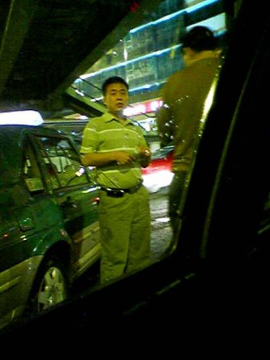
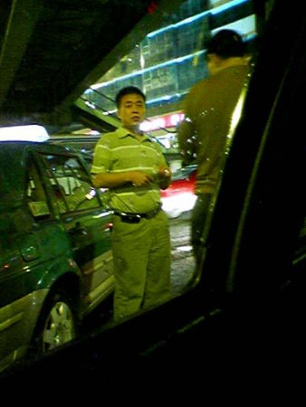

 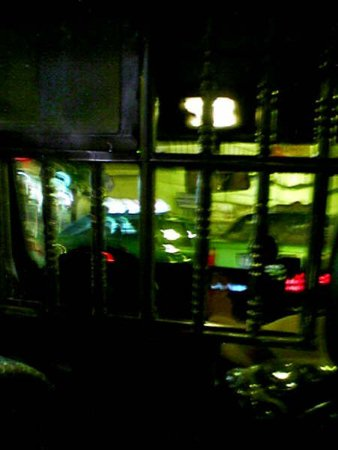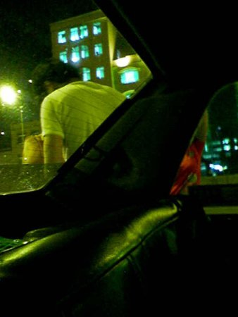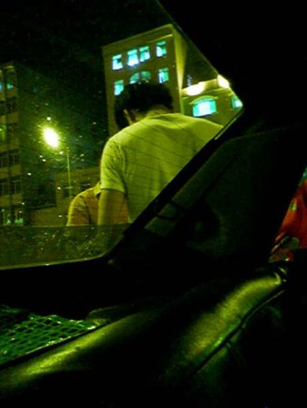
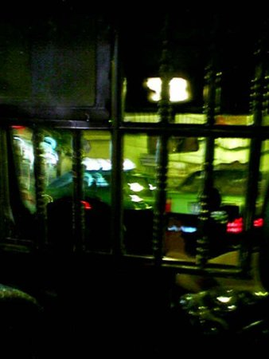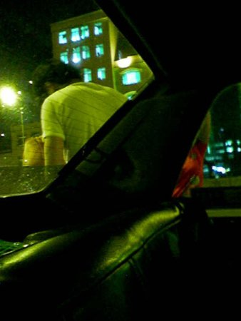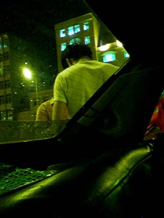 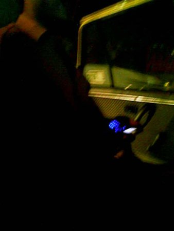
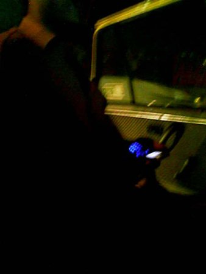 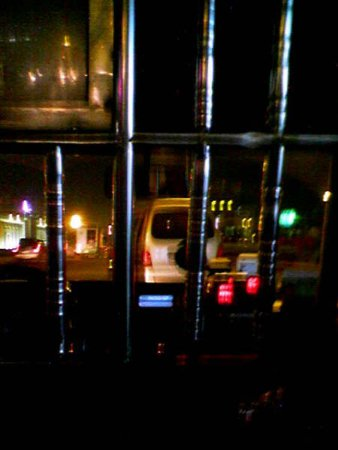
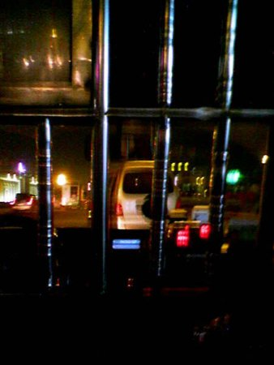
 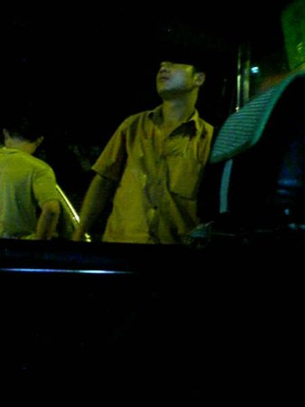
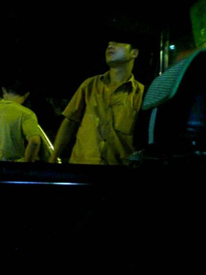 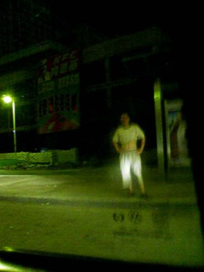
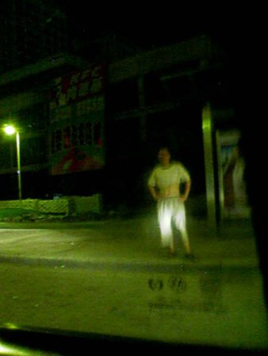 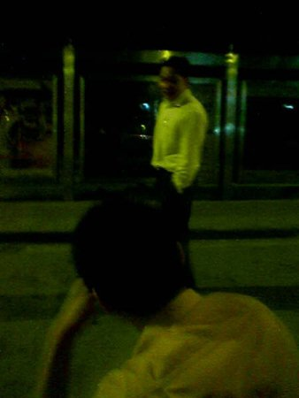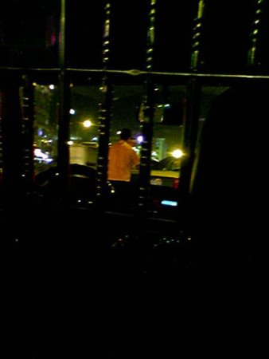
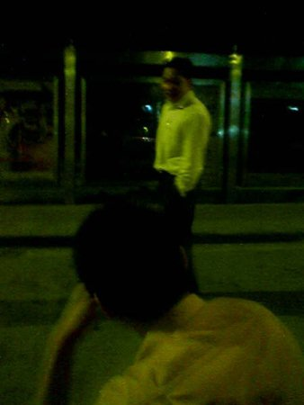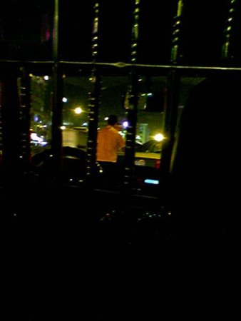


- 5/26/2005 12:41:34 PM
dear~~~~I am really sorry for this~~~